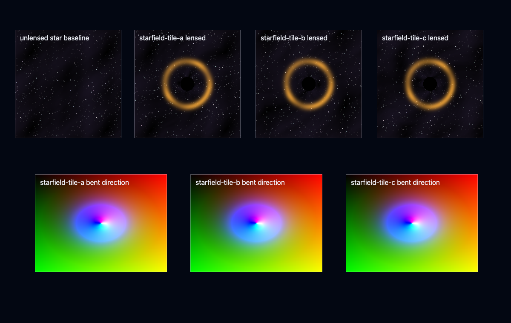
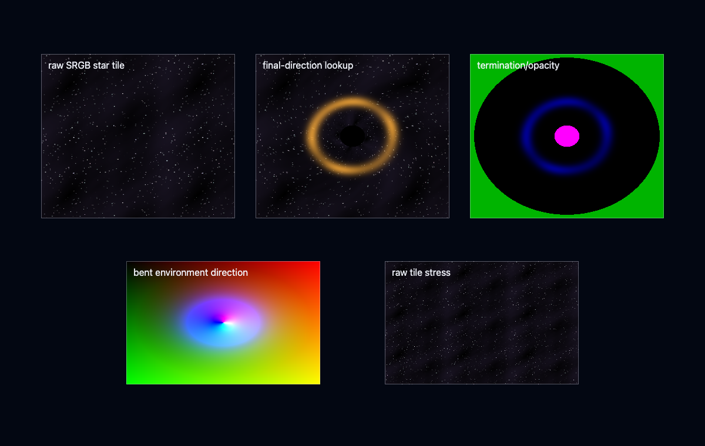
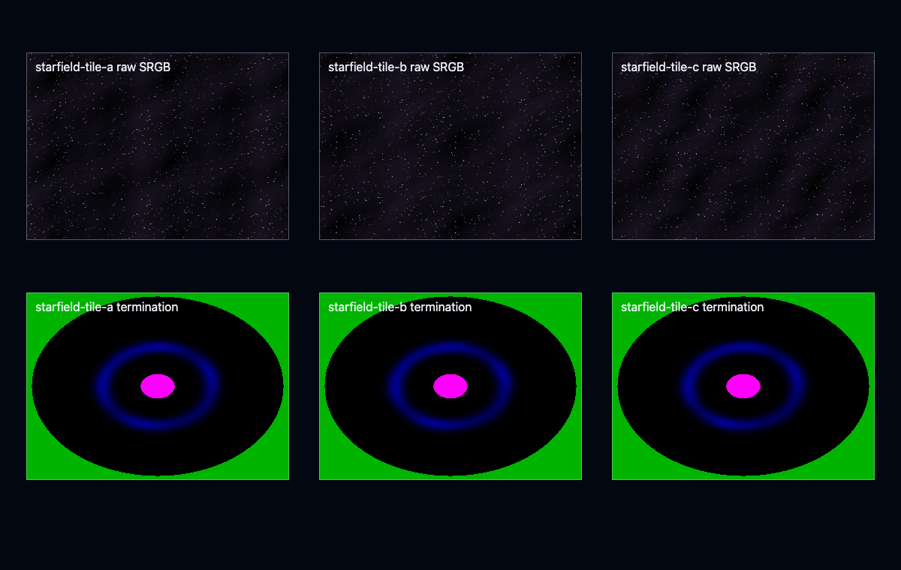

Primary implementation surface
These routes are generated from canonical source. Their exact status remains separate from implementation availability.
Build WebGPU/TSL black holes, wormholes, accretion disks, and curved-ray space effects in Three.js. Use for black-hole lensing, accretion disks, wormholes, curved-ray integration, procedural star fields, relativistic-looking distortion, bounded volumetric structures, and GPU effects that need controlled numerical integration.
These routes are generated from canonical source. Their exact status remains separate from implementation availability.
This skill contributes to the following cross-skill owner graphs.
Lensing is a numerical integration problem, not a screen-space trick. Around a Schwarzschild mass, light bends with an effective potential; the skill integrates the ray ODE in the equatorial plane with a controlled step:
$$\frac{d^2 u}{d\phi^2} + u = \frac{3GM}{c^2}u^2, \qquad u = \frac{1}{r}$$The photon sphere at $r = 3GM/c^2$ and the shadow radius $b_{crit} = 3\sqrt3\,GM/c^2$ anchor the visual scale. The accretion disk adds Doppler beaming and gravitational redshift — the approaching side brightens as
$$I_{obs} = \frac{I_{emit}}{(1+z)^4}, \qquad 1+z = \frac{1}{\sqrt{1 - r_s/r}}\cdot\gamma\,(1 - \beta\cos\theta)$$Integration state (step count, termination reason, escape/capture classification) is a first-class diagnostic output — bounded step budgets and analytic far-field falloff keep the march deterministic and framerate-safe.
Every image identifies what it proves. Page screenshots demonstrate the published presentation only; generated inputs demonstrate asset channels only; canonical acceptance still requires render-target readback and a schema-v2 bundle.
4 published images



The complete SKILL.md as loaded by agents — verbatim, rendered.
Treat these effects as numerical renderers with explicit integration state. The
implementation path is pinned Three.js r185 with WebGPURenderer from three/webgpu,
TSL from three/tsl, NodeMaterial materials, RenderPipeline, node passes,
and compute/storage where caching or diagnostics need GPU-written data. State
whether a shot uses a geodesic model, a radiative-transfer approximation, or an
art-directed deformation; numerical integration does not by itself make a
model physical.
When lens, metric, observer, or emitter state changes with the routed scene,
read the shared
physics domain and interaction contract.
Register those producers and the presentation consumer in PhysicsGraph.
Consume one PhysicsContext for schemaId, contextVersion, the canonical SI
worldFrameId/physicsRootFrameId, worldToPhysicsTransform and
worldTransformRevision, physicsFrameRegistry, metersPerWorldUnit,
physicsOriginEpoch, and the named source clock. Camera-relative rendering is
a presentation adapter; it never owns metric or emitter state.
Publish each metric/lens/emitter source through PhysicsSignalDescriptor with
stable provider/signal identity, model kind and revision, physics-frame pose,
valid PhysicsTimeInterval, sample PhysicsInstant, bounded domain or query
footprint, units/nondimensionalization, state version, residency, validity, and
typed per-channel error. A physical scale is explicit: for example Schwarzschild
state records r_s = 2 G M / c^2 in metres (or mass in kilograms with the
conversion provenance), Kerr spin records either J [kg m^2 s^-1] or declared
a* = c J / (G M^2), and Ellis state records throat radius in metres. Do not
hide any of these in Three.js scene scale.
Keep metric coordinate time, proper time where a massive emitter uses it, null
affine parameter, any solver-only reparameterization such as Mino time, source
simulation time, requested render time, and each binding's actual presented
time distinct. The ODE parameter advances a ray. Map the observer event from
the canonical source PhysicsInstant into the metric chart; for a
nonstationary metric, integrate or recover t_coord(lambda) and
sample/interpolate the metric and emitter fields at each mapped coordinate
event with their versions and error.
Using one immutable metric state for the complete ray is a frozen/quasi-static
approximation with a declared evolution-error gate, not a general
time-dependent geodesic solution.
PhysicsPresentationCandidate.requestedPresentationInstant is t_request.
For each stable binding b, resolve the candidate's PresentedStatePair and
use currentPresented.presentedInstant as t_presented[b]; its previous and
current states each carry independent PresentationSampleProvenance, clock
mapping, brackets, interpolation/extrapolation policy, and error. Never assume
those instants equal the request or share one interpolation alpha across lens,
observer, disk, and emitter providers. For a view, use
CameraViewPublication.previousRenderSampleInstant and
currentRenderSampleInstant. When current is later and their clock mapping and
discontinuity epoch agree, form the exact half-open PhysicsTimeInterval for
temporal reconstruction. Equal instants mean no elapsed interval, not a
zero-length interval record; reversal or discontinuity forces the scoped reset
policy. Render delta is neither an affine step nor a physics step.
Consume the sealed PhysicsPresentationSnapshot only as a reference closure:
resolve its exact view-independent candidate, per-view CameraViewPublication,
and preceding ViewPreparationPublication. The candidate owns the
previous/current lens, observer, and emitter/disk pairs and read leases; the
camera publication owns previous/current global-to-render transforms, render
sample instants, and projection; the view-preparation publication owns
visibility/shadow/cache publications, reactive state, and scoped reset actions.
The snapshot contains binding and lease references, not copied pairs or those
view fields. Validate model/signal version, provenance, validity, and error
through the resolved PhysicsSignalDescriptor and pair.
Lens history derives from these presented states and resets on model/revision,
exterior/termination class, origin/projection, or validity discontinuity.
Consume environment and emitter radiometry through the matching
LightingTransportSnapshot; retain each sampled channel's radiometric
quantity, working/spectral/angular basis, factor identity, validity, and error
so attenuation is not applied twice. Do not invent a bundle-wide basis that
overrides channel metadata.
Ray escape, horizon/core hit, disk crossing, and step-cap termination are
numerical integration events, not InteractionRecord values. A spacetime,
metric parameter, or emissive medium is not a PhysicsMaterialId registered
in PhysicsMaterialRegistry. This renderer does not publish force or impulse
merely because it bends light; body dynamics must consume the same metric/mass
signal through a separate dynamics owner.
A QualityTransition may change tolerances, cache/map resolution, cadence, or
reconstruction only while preserving the selected model class and physical or
artistic claim. A metric/model-class change is a new truth contract and forces
explicit history invalidation or migration.
| Model | Defensible claim | Required evidence |
|---|---|---|
| Null geodesics derived from a named metric | Physical within that metric and its stated idealizations | Equations, units/nondimensionalization, conserved quantities, CPU float64 reference rays, convergence |
| Ellis/Morris-Thorne ultrastatic throat in the reference | Physical geodesics for that wormhole metric; not a black-hole solution | Hamiltonian invariant and exterior-side/tetrad mapping |
| Inverse-square direction steering or UV distortion | Artistic lens-like deformation | Fixed-view visual contract and step-halving stability; no GR claim |
| Procedural disk density/emission | Art-directed participating medium | Explicit extinction/emission units and bounded integration error |
| Screen-space swirl | Image distortion | Never label it gravitational lensing |
$threejs-choose-skills preflight when the request also touches
atmosphere, bloom, temporal reconstruction, shadows, or validation.Fn attached to a MeshBasicNodeMaterial or a
compute pass; keep the integrator and disk/throat/shell shading as separate
node functions.StorageTexture, StorageBufferAttribute, or
StorageInstancedBufferAttribute with renderer.compute() /
renderer.computeAsync() for lens-map caches, per-tile bounds, temporal
history, and diagnostics that are expensive to rebuild in a material node.
After initialization prefer renderer.compute(); r185 computeAsync() is
not a GPU-completion fence.RenderPipeline, pass(), mrt(),
PassNode.setResolutionScale(), outputColorTransform, and
renderOutput(). PostProcessing is the renamed deprecated predecessor;
use RenderPipeline. setResolutionScale() scales the entire pass, so do
not apply it to the full host scene merely to reduce the lens effect.Algorithm class dominates this skill. A fixed full-budget ray loop is the reference cost ceiling; bounded work, accepted-step control, early termination, and temporal amortization are the production architecture.
Any compute, storage, MRT, or reduced-resolution path starts with an explicit backend gate:
await renderer.init();
if (renderer.backend.isWebGPUBackend) {
// Canonical path: TSL raymarch, compute/storage caches, MRT diagnostics.
} else {
throw new Error("WebGPU backend unavailable for the canonical path.");
}
Do not add a second renderer branch to this flagship specification. A missing WebGPU backend is a reported capability failure.
Verified against the repository's installed Three.js REVISION === "185":
WebGPURenderer, RenderPipeline, StorageTexture, and Storage3DTexture are
exports of three/webgpu; Fn, Loop, pass, mrt, renderOutput,
storage, storageTexture, storageTexture3D, and textureStore are exports
of three/tsl. TRAANode, BloomNode, and DepthOfFieldNode are default
exports from their three/addons/tsl/display/*Node.js modules. Re-run import
smoke tests when the pinned revision changes.
For temporal upscaling, r185 provides default TAAUNode and named taau from
three/addons/tsl/display/TAAUNode.js; TRAANode/traa is temporal AA, not an
upscaler. Explicitly configure storage texture format/type/filter/mipmap policy.
| Workload | Resolution | Numerical work | History/cache | Cost status |
|---|---|---|---|---|
| Artistic accretion hero | half, full-res edge/critical mask | 96-160 midpoint/RK steps (Authored) | lens-valid history | Must be Measured per target |
| Static Ellis lens | full or reduced away from critical curve | nonuniform 1D transfer lookup plus footprint refinement | transfer LUT + optional Jacobian | Must be Measured per target |
| Varying metric | selected by angular/invariant/event error | adaptive accepted/rejected work is Gated, not tier-fixed | optional tile cache | Must be Measured per target |
| Background coherent lens | quarter or cached | low-rate direction-map refresh | angular invalidation | Must be Measured per target |
| Distant authored effect | impostor/cubemap | no geodesic claim | optional asset | Must be Measured per target |
Treat authored counts as initial configuration only. A tier becomes Measured only when its GPU timestamp distribution, resolution, renderer revision, device, browser, thermal state, and scene are recorded. A quality threshold is Gated when it is computed from a screen-space or radiance-error limit. Memory arithmetic and analytic error bounds are Derived.
Report whole-frame p50/p95 and paired marginal p50/p95 from matched frames with the effect enabled/disabled. Do not sum pass percentiles or subtract unpaired percentile summaries.
At half-linear 1080p, 920-step RK4 costs
960*540*920*4 = 1,907,712,000 derivative evaluations before shading
(Derived). This rules out a universal mobile-time promise and motivates a
transfer LUT for the static spherical Ellis model.
Budget storage explicitly: two half-resolution HalfFloatType history textures
for radiance/transmittance, one reduced-resolution velocity/depth validity
input, optional one-channel step-count/termination texture for diagnostics, and
one bounded lens-map StorageTexture per cached view or probe. Compute bytes as
ceil(W*s) * ceil(H*s) * bytesPerTexel * liveTextureCount (Derived); do not
infer mobile feasibility from resolution scale alone.
| Error requirement | Occupancy/coherence | Select | Reject or escalate when |
|---|---|---|---|
| Art-directed bending; only stable silhouette required | Local bound, moderate temporal coherence | Heun/midpoint direction update, structure-limited step, segment events | Step-halving changes a fixed-view edge or termination class |
| Static spherical Ellis lens | High coherence | Nonuniform 1D transfer LUT split/refined around critical B=1 |
Interpolation or footprint angular gate fails |
| Static Schwarzschild lens | High coherence | Critical-split impact-parameter quadrature/transfer LUT plus footprint refinement | Strong-deflection interpolation or disk-event gate fails |
| Static Kerr metric and fixed view | High coherence | Separated radial/polar geodesic transfer or validated 2D screen map | Caustic/event/redshift error or camera invalidation gate fails |
| Metric geodesic; ordinary rays | Bounded domain, per-pixel evaluation | RK4 with invariant monitoring, or embedded RK pair when curvature varies | Invariant/final-direction gate fails |
| Metric geodesic near a separatrix or critical orbit | Small image region, high view coherence | Higher-accuracy compute lens map, then interpolate and invalidate by camera error | Per-pixel rejection divergence or float32 cannot meet the angular gate |
| Static or slowly changing lens | High view/probe coherence | Cached direction/depth/Jacobian map | Camera/projection change moves the mapped direction beyond the texel-error gate |
| Sparse emitting volume | Low occupancy | Conservative tile/brick bounds plus empty-space skip | Bound lookup and divergence cost exceed saved field evaluations |
| Rapid camera/effect change | Low coherence | Current-frame march at reduced history weight | History rejection rate removes the expected amortization |
(y_twoHalf - y_full) / 15, scale each state component by
atol + rtol * max(abs(y0), abs(y1)), and accept only when the resulting norm
is at most one. Rejected attempts do not advance state or event accumulators.errorTarget / curvature is not dimensional error
control. Use it only as a step proposal and validate it by convergence.B=b/a, classify B<1 traversal, B>1
turning, and the critical B=1 light ring. A capped critical ray is not an
escaped ray.float64 reference rays for numerical parity with a
declared metric before treating the result as more than an artistic
approximation.For a physical emitting medium after the declared SI adapter, let sigma_t be
extinction in m^-1, j be an emission coefficient in
W m^-3 sr^-1 (or the declared wavelength-resolved equivalent), radiance be
in W m^-2 sr^-1, and tau = sigma_t * ds be dimensionless. Declare the
local comoving tetrad/spectral basis; curved-spacetime frequency transfer still
obeys the invariant transfer rules above. An explicitly artistic medium may
instead declare a coherent scene-length basis, but then it
makes no SI radiometric claim. A constant segment contributes
T * (j / sigma_t) * (1 - exp(-tau)); use the j * ds limit as sigma_t
approaches zero. If code instead multiplies segmentEmission by alpha, document
that value as the source function j / sigma_t, not an emission coefficient.
SRGBColorSpace.
HDR/EXR or procedurally generated radiance remains in the declared linear
working color space; do not tag every environment as sRGB.NoColorSpace or linear data settings.HalfFloatType working targets until tone mapping.outputColorTransform or an
explicit renderOutput() node. With explicit renderOutput(), set
renderPipeline.outputColorTransform = false; set
renderPipeline.needsUpdate = true after changing diagnostic outputNode.The shared physics ABI is defined only by the physics domain and interaction contract; this skill supplies the curved-ray adapter, not a parallel physics schema.
Read references/curved-ray-integrators.md for the WebGPU/TSL architecture, RK4 wormhole state reduction, artistic curved-ray accretion integrator, continuous disk crossing, compute/storage caches, diagnostics, and validation requirements.
Canonical WebGPU lab: examples/tsl-curved-ray/. It retains the artistic
bounded accretion shader and adds GPU-sampled, critical-split Ellis and
Schwarzschild direction-transfer stages, a compute direction cache, and
world-position-reprojected, termination-aware temporal ping-pong. A separate
direct-GPU probe path executes Ellis/Schwarzschild ODEs, and the convergence
route dispatches three Schwarzschild step caps. Independent float64 Ellis quadrature and
Schwarzschild Hamiltonian rays gate tables and validation readback. These CPU/source
checks do not replace the native-browser readback/timestamp evidence required
by lab.manifest.json.
Legacy WebGL implementation (deprecated, do not extend): examples/curved-ray-accretion-volume/curved-ray-effect.js
Use $threejs-particles-trails-and-effects for ordinary particles, trails, plasma, and event
effects. Use $threejs-volumetric-clouds for weather-density volumes,
$threejs-sky-atmosphere-and-haze for planetary scattering,
$threejs-bloom and $threejs-exposure-color-grading for post effects, and
$threejs-visual-validation for fixed-view visual contracts. This skill owns
per-pixel numerical ray integration through curved or bounded space-effect
domains.
Preserved concept proxies and generated-asset previews. They are excluded from primary completion counts and link to the canonical lab through the schema-v2 registry.